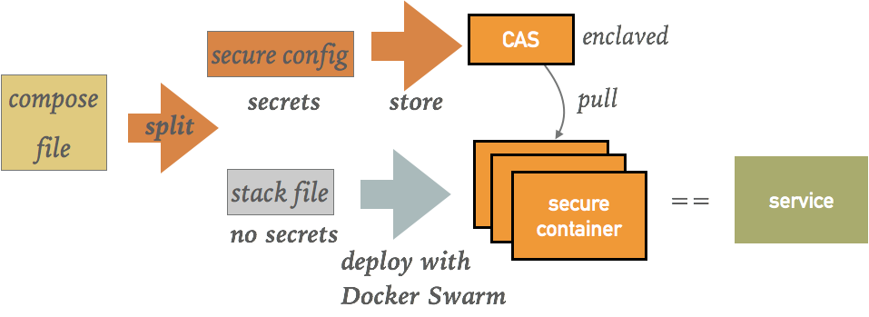

Compose / Stack Files
SCONE supports to run secure applications consisting of multiple secure containers. To do so, SCONE introduces slightly extended Docker compose file. Such an extended compose file defines for each process that runs inside of an enclave, a unique hash value (MRENCLAVE). During startup, SCONE performs an attestation for all these secure processes to ensure that the hash of the started program is as expected, i.e., is equal to MRENCLAVE. Only if it is equal, the arguments and the environment variables are passed to the process. In this way, we can pass secrets as arguments or environment variables in a secure fashion to a secure process.
By default, all containers are started with SCONE and the arguments are passed in a secure fashion to the started processes. However, you might not want to run all processes inside of enclaves. For containers that should be directly started with Docker Swarm, you need to set field not_scone: "true". In this case, all arguments and the environment variables are directly passed to the container with Docker Swarm (instead of SCONE).
Let's consider an example, that consists of a haproxy that runs in native mode and is directly started with Docker Swarm (indicated by line not_scone: "true") Moreover, we start myapp (defined in container image myapp-image) and specify MRENCLAVE. Only after ensuring that the program started in the enclave has the expected MRENCLAVE the arguments and the environment variables are passed to myapp.
version: "3.1.scone"
services:
primary-service:
image: myapp-image:latest
command: /myapp arg1 arg2 arg3 $my_password
mrenclave: 5764436f08dd4cdb526f082be1a07a3422f79ef2b01a5e24f78f9034a838c335
environment:
- SECURE_ENV=value
- MY_PIN=$my_pin
- MY_PASSWORD=$my_password
working_dir: /
proxy:
image: haproxy
command: haproxy --read_config_from_environ
not_scone: "true"
environment:
- "HAPROXY_CONFIG=a=b,c=d,3=4"
secrets:
my_pin:
kind: numeric
length: "4"
my_password:
kind: ascii
length: "8"
The extended compose file is split by SCONE into a standard compose file and a configuration information that is stored in the SCONE Configruation and Attestation Service (CAS):

In the current version of scone, we assume that the compose file is stored on a trusted host. (We plan to support compose files stored on untrusted host in the near future.)
The split functionality is part of the scone CLI, i.e., you can split a compose file via
$ scone cas split <COMPOSE_FILE> --stack <STACK_ID>
The stack ID is a randomly chose unique ID.
This creates a stack file that can be used to start a set of services in your Swarm. Read nginx example for some more details how to do this.
To be able to use a CAS, you are required to login to a CAS. We assume that your CAS is available at IP address $IP. If you have set up the CAS in the way specified in CAS Setup, set environment variable IP to the external IP address of the swarm manager node.
You can login into CAS via:
$ scone cas login --host $IP:8081:18765
See nginx example for some more details and read CAS Setup to learn how to run a CAS service for development.
© scontain.com, March 2018. Questions or Suggestions?